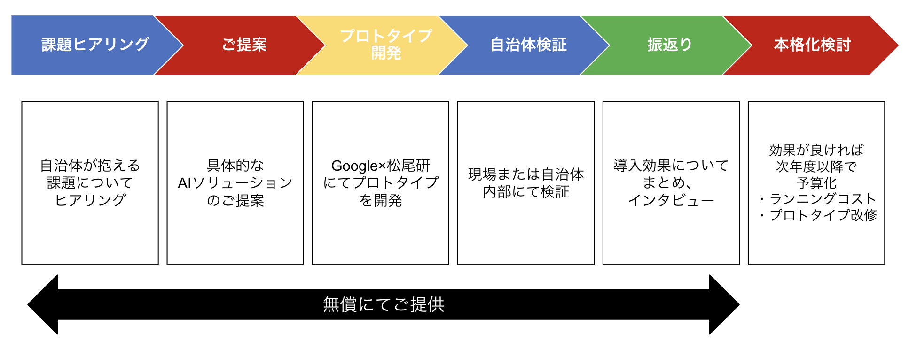

Case 01 — A県B市（仮）
AI防災予測・避難シミュレーション
災害時の避難指示の遅延と情報伝達の不備が課題であったA県B市において、AIによる災害予測モデルと避難シミュレーションを構築。リアルタイムの気象データと地理情報を組み合わせ、避難指示の発令を迅速化。
避難指示の発令時間 40%短縮（仮数値）
詳しく見るAbout
Googleは2024年6月19日、Google for Japanにおいて東京大学の松尾・岩澤研究室とパートナーシップを結び、2027年までに日本全国における地域課題の解決をサポートする生成AIモデルの実装とAI人材の育成を支援する取り組みを発表しました。
現在、日本は高齢化社会や労働人口の減少などの社会課題に直面しています。AIをはじめとするテクノロジーはそうした社会課題を解決する一助となり得ると考えています。例えば、AIを活用することで、労働力人口が減少する中で一人ひとりの創造性や生産性を向上させること、産業構造の転換を図りながら企業の競争力を高めること、そして、高齢化が進む中で人々の健康や社会参加を支えることなどが可能になると信じています。そのような社会課題を背景に、今回のパートナーシップでは、同研究室とGoogleのエンジニアが協力して、県の課題解決を支援する生成AIのモデルを構築し、その実装を通してAI人材育成に貢献します。第一弾として、雇用のミスマッチ解消を目指した大阪府との取り組みを開始し、今後開始予定の広島県をはじめ各地での取り組みをすすめます。
Works
Case 01 — A県B市（仮）
災害時の避難指示の遅延と情報伝達の不備が課題であったA県B市において、AIによる災害予測モデルと避難シミュレーションを構築。リアルタイムの気象データと地理情報を組み合わせ、避難指示の発令を迅速化。
避難指示の発令時間 40%短縮（仮数値）
詳しく見る
Case 02 — C県D市（仮）
窓口業務の混雑と住民の待ち時間が慢性的な課題であったC県D市において、AIチャットボットと自動振り分けシステムを導入。住民からのよくある問い合わせを自動対応し、職員は複雑な相談業務に集中できる環境を構築。
窓口対応時間 60%削減（仮数値）
詳しく見る
Case 03 — E県F町（仮）
観光客数の減少と地域資源の活用不足に直面していたE県F町において、AIが訪問者の嗜好・行動データを分析し、一人ひとりに最適化された観光ルートを提案するシステムを開発。
観光客数 25%増加（仮数値）
詳しく見る※ 事例内容・数値は仮のものです。具体の事例文言は松尾研と連携して作成します。
Movie
Process

Training
自治体職員や教育関係者、中小企業、スタートアップ、住民の方々に対して、多様なニーズに応じたデジタルスキルトレーニングを、開発・提供しています。以下のトレーニング一覧より、ご希望のトレーニングを受講またはお問い合わせいただけます。個別開催でのトレーニングをご希望の場合は、諸条件が発生する可能性がある点、ご留意ください。
自治体・中央省庁など公共部門の皆様に向けた、AI を業務でフル活用するための実践的トレーニングです。AI の基礎学習だけでなく、公共部門での具体的な事例を題材に、実際の AI ツールを活用した課題解決に取り組みます。
お問い合わせ中小企業が直面するサイバー攻撃の実態と具体的なサイバーセキュリティ対策について、これから対策を開始する方にもわかりやすく解説します。経済産業省の「実践的方策ガイドβ版」等をもとに、組織として取り組むべきサイバーセキュリティ対策の始め方をご紹介します。
お問い合わせ